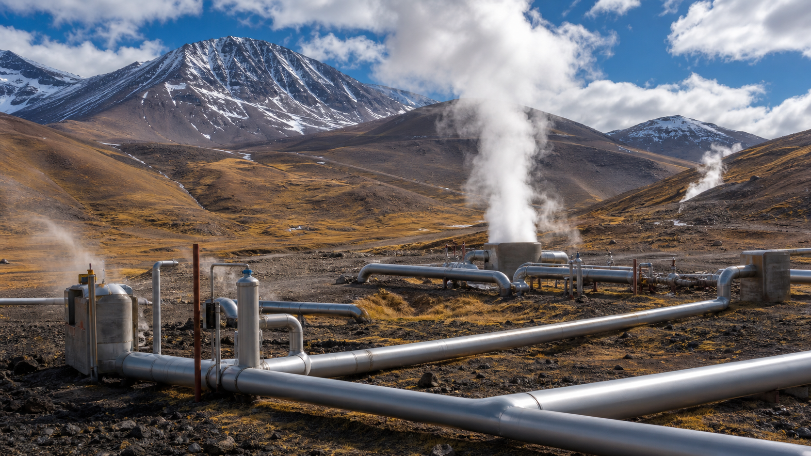

¿Qué es?

La energía geotérmica aprovecha el calor almacenado en el interior de la Tierra. El planeta libera constantemente calor desde su núcleo, donde las temperaturas superan los 5.000°C. Este calor se manifiesta en la superficie a través de volcanes, géiseres, aguas termales y, de manera más sutil, a través del gradiente geotérmico: la temperatura aumenta aproximadamente 25-30°C por cada kilómetro de profundidad.
Existen diferentes tipos de aprovechamiento según la temperatura del recurso. La alta entalpía (temperaturas superiores a 150°C) se encuentra en zonas volcánicas y permite generar electricidad. La media y baja entalpía (entre 30 y 150°C) se utiliza para calefacción urbana, baños termales, invernaderos y procesos industriales. Las bombas de calor geotérmicas aprovechan la temperatura constante del subsuelo (aproximadamente 15°C a pocos metros de profundidad) para climatizar viviendas, funcionando como calefacción en invierno y refrigeración en verano.
En las zonas volcánicas de la Cordillera de los Andes, el agua subterránea se calienta al entrar en contacto con rocas calientes a profundidad, formando reservorios de agua caliente y vapor que pueden extraerse mediante perforaciones para generar electricidad o calor útil.
Usos
La energía geotérmica tiene aplicaciones muy variadas, desde la generación de electricidad hasta usos turísticos y residenciales:
- ▸Generación eléctrica: Plantas de vapor seco (el vapor sale directamente del pozo), plantas flash (agua caliente a presión que se vaporiza al liberarse) y plantas de ciclo binario (un fluido secundario con menor punto de ebullición permite aprovechar temperaturas de 100-150°C).
- ▸Calefacción urbana (district heating): Redes de agua caliente que distribuyen calor a edificios, hospitales, escuelas y viviendas en zonas cercanas a reservorios geotérmicos.
- ▸Baños termales y turismo de salud: Las aguas termales de la Cordillera son un atractivo turístico y terapéutico.
- ▸Invernaderos y acuicultura: El agua caliente permite cultivar plantas y criar peces en zonas frías durante todo el año.
- ▸Bombas de calor geotérmicas: Sistemas para climatización de viviendas que aprovechan la temperatura constante del subsuelo.
En Argentina, la planta geotérmica Copahue (Neuquén) es la única destinada a generación eléctrica, aunque es un proyecto experimental de 1 MW. Los baños termales son el uso más extendido: Termas de Río Hondo (Santiago del Estero), Copahue, Caviahue y Los Molles (Neuquén) son destinos tradicionales.
Rendimiento
La eficiencia de conversión de las plantas geotérmicas es relativamente baja, entre 10% y 20%, debido a que el vapor y el agua caliente tienen temperaturas moderadas comparadas con las de una central térmica de combustión. Sin embargo, lo que pierden en eficiencia lo ganan en constancia.
El factor de capacidad de una planta geotérmica es extraordinariamente alto: 70-90%. Esto significa que la planta genera electricidad casi todo el tiempo, 24 horas al día, los 7 días de la semana, los 365 días del año. No depende del clima ni del ciclo día-noche. Es, junto con la nuclear, una de las pocas fuentes capaces de proporcionar electricidad de base sin emisiones.
El principal costo de la energía geotérmica está en la exploración y perforación inicial. Perforar pozos de 2 a 4 km de profundidad es muy costoso y existe el riesgo de no encontrar un reservorio comercialmente explotable. Sin embargo, una vez en operación, los costos operativos son bajos y estables.
Lugar en Argentina
La Cordillera de los Andes, volcánicamente activa, concentra el mayor potencial geotérmico de Argentina. Las zonas más prometedoras son:
- ▸Copahue (Neuquén): Primera y única planta geotérmica de Argentina, proyecto piloto de 1 MW con potencial estimado de 30 MW.
- ▸Domuyo (Neuquén): Considerado el mayor reservorio geotérmico de América del Sur, con temperaturas subterráneas excepcionalmente altas.
- ▸Tuzgle (Salta), Los Andes (Mendoza), Valle del Cura (San Juan): Sitios con alto potencial identificado, en etapa de estudio y exploración.
El proyecto GEOFAR, impulsado por el Consejo Federal de Inversiones (CFI), busca desarrollar el sector geotérmico argentino mediante estudios de prefactibilidad, capacitación técnica y promoción de inversiones.
En la matriz energética
La energía geotérmica representa menos del 0,1% de la matriz eléctrica argentina. La única planta en operación es Copahue (Neuquén), con apenas 1 MW de potencia instalada y funcionamiento experimental.
Sin embargo, el potencial estimado es muy significativo. Según el Servicio Geológico Minero Argentino (SEGEMAR), el potencial geotérmico de la Cordillera de los Andes supera los 500 MW de capacidad instalable. El Plan Energético Nacional contempla incentivos específicos para proyectos geotérmicos, aunque hasta ahora no se han concretado desarrollos comerciales de gran escala.
Implicancia real
Argentina tiene uno de los potenciales geotérmicos más grandes de América Latina, pero el desarrollo es muy lento. Copahue, con solo 1 MW, es la única experiencia de generación eléctrica geotérmica del país, y su funcionamiento es más experimental que comercial.
El caso de Domuyo (Neuquén) es paradigmático: las investigaciones indican que podría albergar el mayor reservorio geotérmico de Sudamérica, con potencial para abastecer de electricidad a toda la provincia de Neuquén. Sin embargo, el desarrollo sigue paralizado por las barreras que enfrenta el sector.
Las principales barreras son el alto riesgo de exploración (perforar pozos profundos es caro y no siempre se encuentra un reservorio viable), la falta de un marco regulatorio específico para la geotermia, y la competencia con otras renovables más baratas, como la solar y la eólica. En el corto plazo, el uso más extendido de la geotermia en Argentina sigue siendo el turismo termal, un recurso valioso pero de bajo impacto energético.
Ventajas y desventajas
Ventajas
- Constante (no intermitente, genera 24/7/365)
- Factor de capacidad muy alto (70-90%)
- Baja huella de terreno (ocupa poco espacio)
- No emite CO₂ (plantas de ciclo binario: casi cero)
- Larga vida útil (30-50 años)
- Produce electricidad de base
Desventajas
- Solo viable en zonas volcánicas o tectónicas
- Alto riesgo y costo de exploración (perforación)
- Puede liberar gases como H₂S (sulfuro de hidrógeno)
- Requiere grandes cantidades de agua
- Riesgo de inducir sismicidad
- Enfriamiento del reservorio con el tiempo